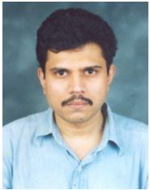

Ranjan K. Mallik
Professor and J. C. Bose Fellow
Department of Electrical Engineering
IIT Delhi
Research Areas:
Diversity Combining and Channel Modeling for Wireless Communications, MIMO and Space-Time Systems, Cooperative Communications, Multiple Access Systems, Power Line Communications, Molecular Communications, Quantum Communications, Difference Equations, Linear Algebra
Address for Correspondence:
Dr. Ranjan K. Mallik
Department of Electrical Engineering
Indian Institute of Technology Delhi
Hauz Khas, New Delhi 110016, INDIA
Phone: +91-(11)-2659-1049
E-mail: rkmallik@ee.iitd.ernet.in, ranjankmallik@yahoo.co.in, rkmallik@hotmail.com